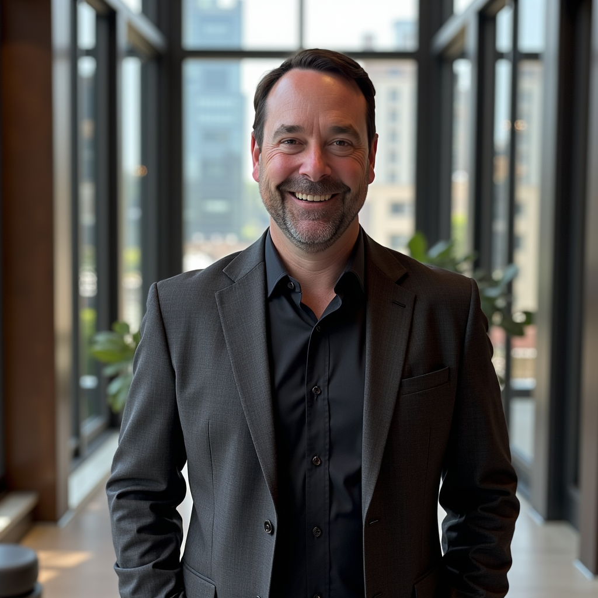

Firm history and background.

Welty Legal, PC was founded in 1973 by Mike Welty, and for more than five decades has served individuals, families, and businesses throughout Healdsburg and the greater North Bay. After many years working alongside his father, Matt Welty took over the firm, carrying forward its commitment to practical, attentive counsel while expanding its reach.
Following the 2017 North Bay firestorms, including the Tubbs Fire, and the wildfires that followed across California, including the Camp Fire in Paradise, the Kincade Fire, and the Palisades and Eaton Fires, the firm added insurance recovery to its practice areas, helping policyholders navigate the claims process and pursue fair recovery after catastrophic loss.
Matt Welty earned his Bachelor of Arts in Political Science from the University of California, Davis, and his law degree from University of the Pacific, McGeorge School of Law. He also studied at the University of Salzburg in Austria, where his coursework was taught by former U.S. Supreme Court Justice Anthony M. Kennedy.
Outside the office, Matt is active in the local nonprofit community. He is married and is raising three boys.